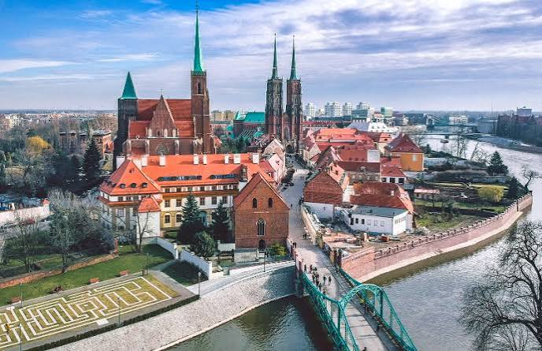
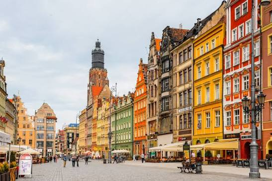
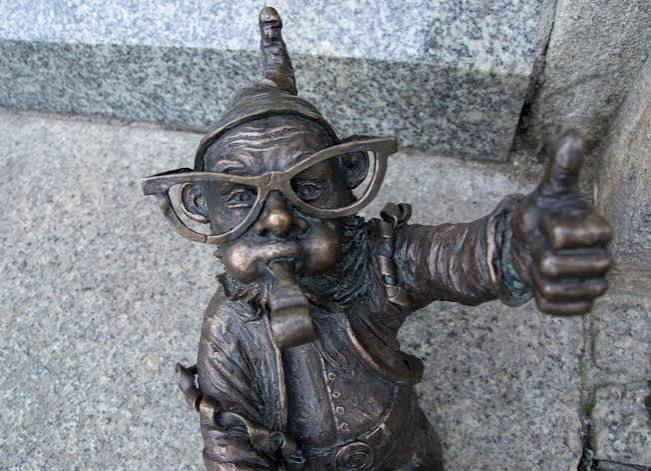
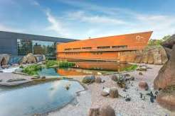

Spis treści:
-
Ostrów Tumski
- Katedra św. Jana Chrzciciela
- Kościół Świętego Krzyża
- Rynek
- Wrocławskie Krasnale
- Zoo
Ostrów Tumski:

Ostrów Tumski to najstarsza, zabytkowa część Wrocławia, która zachwyca unikalnym klimatem i gazowymi latarniami zapalanymi każdego wieczoru przez prawdziwego latarnika. Jej głównym punktem jest majestatyczna Katedra św. Jana Chrzciciela, z której wież można podziwiać wspaniałą panoramę miasta. Z kolei tuż obok znajduje się unikalny, dwupoziomowy Kościół Świętego Krzyża, będący wybitnym przykładem śląskiego gotyku. Spacer po tych historycznych uliczkach to prawdziwa podróż w czasie.
Rynek:

Wrocławski Rynek to jeden z największych i najpiękniejszych placów tego typu w Europie, otoczony kolorowymi, pieczołowicie odrestaurowanymi kamienicami. Jego sercem jest wspaniały, późnogotycki Ratusz, w którego piwnicach działa słynna Piwnica Świdnicka – jedna z najstarszych restauracji na kontynencie. Rynek tętni życiem przez całą dobę, regularnie goszcząc festiwale, jarmarki oraz ulicznych artystów. To obowiązkowy punkt każdej wycieczki i idealne miejsce na pamiątkowe zdjęcie.
Wrocławskie krasnale:

Wrocławskie krasnale to jeden z najbardziej uroczych symboli miasta, który niespodziewanie zyskał międzynarodową sławę. Te niewielkie, odlane z brązu figurki są rozsiane po całych ulicach, tworząc niezwykły szlak turystyczny idealny dla odkrywców w każdym wieku. Ich historia jest fascynująca, ponieważ początkowo krasnale malowane na murach były symbolem walki z systemem komunistycznym w ramach działań Pomarańczowej Alternatywy. Dziś we Wrocławiu można spotkać kilkaset takich skrzatów, a każdy z nich ma własne imię, atrybuty i wyjątkową historię.
Zoo:

| Atrakcja | Cena biletów | |
|---|---|---|
| Zoo Wrocław | Normalny: 70 zł | |
|
||
| Dzieci do lat 3 wchodzą za darmo! | ||